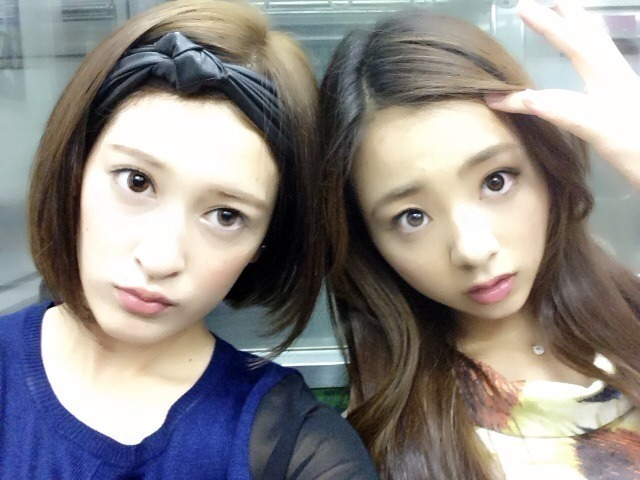

はーーーい ＼(^ω^)／
ろってぃ-ちゃんですっ.

このお写真 お気に入りなの― )))てへ.
一昨日、握手会が始まる前に
せっちゃんから
「遅くなっちゃったけど:-<っ」て
お誕生プレゼントを貰ったの。
すっごく綺麗なブルーでひし形の
アクセサリー (〃▽〃)キラキラん
とっても嬉ちくって、
開けてすぐつけて握手会に行ったよ♪
首もと見て
気づいてくれた人いるかな？
今度また つけるから
見に来てほちぃなっ\(〃ω〃)/
あとねぇ〜、また今回も
歌っちゃった(/-＼*)
三日月とサスケ。
握手会の時は Aメロから歌うの。
サスケ知ってる方も
サビしか知らないでしょう(´；ω；`)？
だから、サスケのAメロからは
個別握手会限定なの\(・ω・)/
隣のレーンの方やスタッフさんも
聞こえてると思うから歌いながら
ドキドキしちゃった(/ω＼*)
ファンの方に今度あれ歌ってw
って言われた曲が
小柳ゆきさんの、
「あなたのキスを数えましょう」と
MISIAさんの「つつみ込むように...」
だったんだけど
どっちも まひろの大好きな曲で
カラオケでもよく入れる曲だから
『何でまひろの歌いたい曲
わかるんだろう(><)？』
ってびっくりしちゃった (*´ `*)
皆 色々とありがとーねーー。
あっ、歌詞覚えとかなきゃ...
ぢゃあ最後にぃぃぃ♪
かなりんペロペロー
Tシャツ一緒www\(´ω`)/
さよならぁ〜。のし
すっきゃねん。